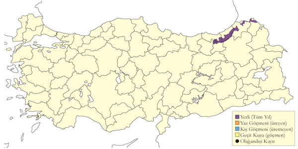
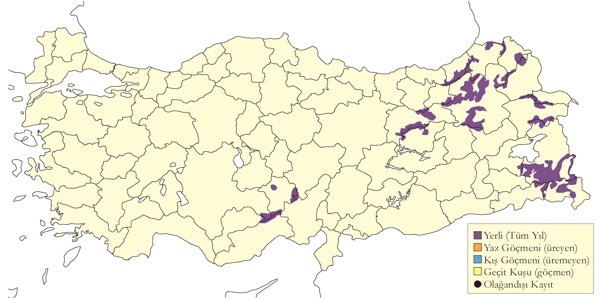
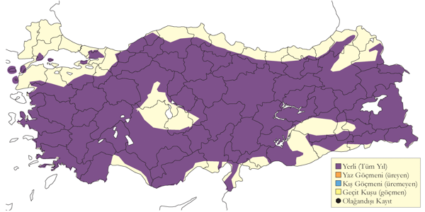
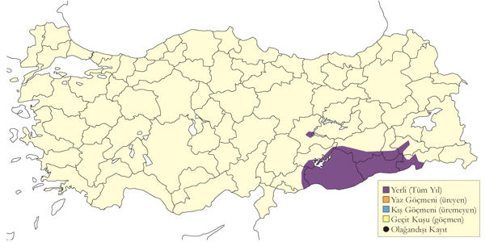
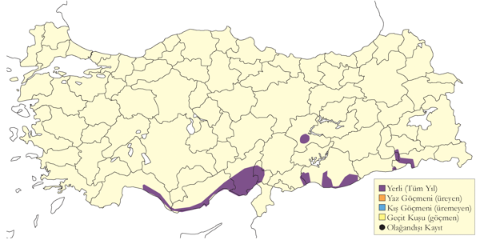
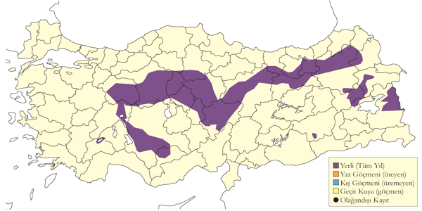
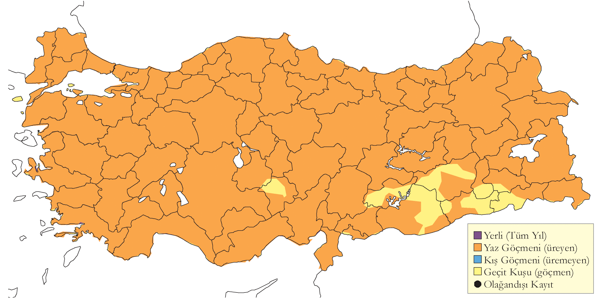
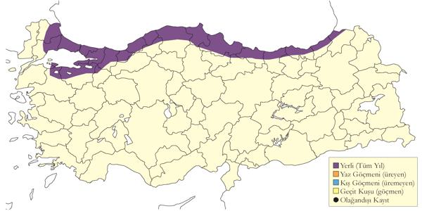

2 Tavuksular
Orman Horozu
Lyrurus tetrix, Black Grouse
TÜRKİYE’DE SOYU TÜKENMİŞTİR.
Relikt bir popülasyonu 19. yüzyılın sonuna kadar İstanbul çevresinde devam etmiş1, ancak anlaşıldığı kadarıyla avlanma sonucunda soyu tükenmiştir. İlk kez2, sonrasında3 tarafından bahsedilmiştir. Son kez ise4ve5 türün İstanbul Alemdağ çevresinde bulunabileceğini özellikle bildirmiş ve şehirde satılan ve nereden geldiği bilinmeyen ölü erkek bireylerin varlığından bahsetmişlerdir.6 aynı dönemde Bulgaristan popülasyonun da ciddi oranda azaldığını kaydetmiş, bunu muhtemelen avcılığa bağlamış, tür burada da uzun süreden beri tükenmiş durumdadır. Genel olarak türün küresel yayılış alanı kuzey ve batıya doğru daralmıştır7–9 Yunanistan’da 1935 yılından bu yana Selanik ve Rodop Dağları çevresinden dört kayıt bildirmiştir.
Üreme
Türkiye’de yuvalamaz.
Alttürler ve Sınıflandırma
Türkiye’de yaşamış popülasyon muhtemelen nominat tetrix alttürüne aittir. Literatürde Tetrao cinsi altında da sınıflandırılmıştır.
Dağ Horozu
Lyrurus mlokosiewiczi, Caucasian Grouse
Lokal ve seyrek yerlidir.
Doğu Karadeniz Dağlarının kuzey yamaçlarında sıklıkla karşılaşılmıştır. 3000 metre üzerinden gelen kayıtlar10 doğrulama gerektirmektedir; ancak, neredeyse yerleşim yerlerine yakın (muhtemelen 15 kilometreye kadar) ve sonbahar ve kış mevsimlerinde düşük yüksekliklerde bir miktar ağaç sınırının altında ve muhtemelen özellikle şiddetli soğuklarda daha da düşük yüksekliklerde bulunurlar. Yayılış bodur ormangülü Rhododendron ile alpin çayır kuşağının altındaki huş Betula içeren yamaçlar üzerine yoğunlaşmıştır11.
Artvin’in güneydoğusundan Gürcistan sınırı üzerinde Posof’a kadar Yalnızçam Dağları’nda dar bir alanda bulunurlar. Yerel halktan alınan bilgiler ışığında Gümüşhane’nın batısında ve Giresun çevresinde ve muhtemelen Bingöl’e kadar güneyde, Cilo Dağları’nda bulunması olasıdır.
Türün lokal olarak nadir ya da doğu Karadeniz kıyı şeridi boyunca yaygın yerli olduğu gösterilene kadar, geçtiğimiz yıllar içerisindeki kayıtlarda görülen aşırı düzeydeki yetersizlik ile özellikle 1980 öncesi kayıtlardaki eksiklikler türün Türkiye’de çok az bilinmesine neden olmuştur. G. Neuhäuser Eylül 1943 tarihinde yüksek olasılıkla Türkiye için ilk kayıt olan bir çift huş tavuğunu Rize ve Erzurum arasındaki dağlardan toplamıştır12.
Türkiye popülasyonunun muhtemelen %90’nın görüldüğü Kaçkar Dağları’nda, özellikle Sivrikaya çevresinde, 1993 yılında geçekleştirilen gözlem çalışmalarında kur yapma amacıyla bir araya toplanan (lek poligini) 134 erkek gözlenmiştir. O tarihlerde yapılan tümevarımla toplam popülasyonun 2000 bireyden fazla olduğu tahmin edilmiştir13. Türkiye popülasyon büyüklüğü son zamanlardaki çalışmalara göre 1508-2675 birey arasında ölçülmüş ve tür 45 coğrafi yerde kaydedilmiştir14. Bu coğrafi yerlerin 29 tanesi yakın bir zaman dilimi içerisinde keşfedilmiştir. Bunlardan 4 tanesi nispeten ayrık popülasyonlardır. Türün yayılış sınırlarını ve popülasyon büyüklüğünü tam olarak belirlemek için bilgisayar modellemesi kullanılmıştır15. Ancak, modellemenin sonuçları bilinen ve yayılış haritasında gösterilen alanını genişletilememiştir. Bununla birlikte 4900 bireylik popülasyon tahmini önceki en iyimser tahminlerden bile çok yüksek olmuştur.
Türkiye popülasyonu yaylaların tatil konutlarına dönüşmesi sonucunda artan yol inşaatları nedeniyle yaşam alanlarının terkedilmesi ile parçalanmasından etkilenmekte ve nesli tehlike altına girmektedir. daha az ölçüde avlanma baskısından (özellikle sonbahar döneminde görülen bir problem) ve Tür için bir tehdit kaynağı olarak listelenen aşırı otlatma bugün kaydedeğer ölçekte değildir, ancak bu durumun izlenmesi gereklidir. Türün popülasyonlarının dengede ya da azalmakta olup olmadığını ortaya koymak için türün popülasyonu ve yayılışı ile ilgili tarihsel bilgiler yetersiz düzeydedir; ancak, popülasyonların azalmasından şüphelenir.

Üreme
Erkekler özellikle şafak ve gün batımında, eşeylerin çiftleşme amaçlı karşılaştığı alanlarda biraraya gelerek bir arada kur gösterileri (nümayiş) yaparlar. Türkiye’de sadece iki yuva türün en iyi bilindiği lokalite, Sivrikaya’da (Rize) bulunmuştur. İlk yuva 2800-3000 metrede, bodur Rhododendron çalılarının bulunduğu 3 hektarlık bir alanda bulunmuştur. Yuva yoğun, kısa (1 metre) ve çok dallı çallılarda iyice gizlenmiş olup, kökten çıkan dalların arasında, zeminde sığ bir çanak şeklinde yapılmış, kuru dallar ve birkaç kuru Rhododendron yapraklarıyla astarlanmıştır. Bu yuvada 6 Temmuz 1991 tarihinde 5 yumurta kaydedilmiştir16. Diğer kayıtlarda dişinin uçarak uzaklaştığı bir yuvada 12 Temmuz 1993 tarihinde 4 yumurta görülmüş ve bir yumurta kabuğu 11 Haziran 1997 tarihinde bulunmuştur. Bir erişkin dişi ile tam gelişmemiş iki genç 12 Haziran 2003 tarihinde Ardahan, Posof’da gözlenmiş ve yumurtlama zamanının mayıs başında başladığını göstermiştir. Başka yerlerde, yaygın kuluçka küme büyüklüğü 5-6 (2-10) adettir. Ermenistan’da, 30 Mayıs 1984’de bulunan bir yuva 8 yumurta içermiş, bu yuvada ilk yumurtanın 21-23 Mayıs 1984 tarihinde bırakıldığı belirlenmiştir. Bir diğer yuva 20 Mayıs 1985 tarihinde yumurta içermektedir (ilk yumurta 13-16 Mayıs 1985 tarihinde bırakılmıştır) ve bir diğeri 31 Temmuz 1994 tarihinde yumurta içermektedir. Bir dişi üç genç bireyle (ergin büyüklüğünün %25’ine ulaşmış) birlikte 5 Haziran 1980 tarihinde ve bir diğeri 26 Temmuz 1980 tarihinde tamamiyle büyümüş 5 genç içermektedir (Adamian ve Klem 1999). Ermenistan’dan üreme döneminin daha erken gösteren kayıtlar Türkiye kayıtlarının normal üreme dönemini yansıtıp yansıtmadığı hakkında bazı şüpheleri ortaya koymuştur.
Alttürler ve Sınıflandırma
Monotipik bir türdür. Rusca literatürde sıkça görüldüğü gibi, bazen Lyrurus cinsi altında da sınıflandırılmıştır (farklı uygulamaların özeti için bkz)17.
Urkeklik
Tetraogallus caspius, Caspian Snowcock
Yüksek dağlarda lokal ve seyrek yerlidir.
Dağlık alanlarının yerlisidir. Üç önemli popülasyon Doğu Karadeniz Bölgesi, Yüksekova ile Hakkari’ye ve İran sınırına kadar uzanan Doğu Anadolu’nun dağlık kısımları ve yukarıda bahsedilen ve en batı sınırını oluşturan Toroslar olarak belirtilebilir. En batıda Toros silsilesinde Bolkar ve Melendiz dağlarında kaydedilmiştir. Yaz aylarında genellikle 2400 metrenin üzerinde kaydedilir. Ancak yazın Mersin’in kuzeyindeki dağlarda 2000 metrenin altında görülmüştür. Ara sıra sonbahar döneminde 60 bireye kadar büyük gruplar oluşturular; bu grupların bazıları kış ortasında alçak bölgelere inenler olabilir.
Eski kayıtlarda, en batıda Geyik Dağı, Alanya’nın kuzeyi ve Antalya’nın dağlık alanlarında gözlenmiştir12. Daha batıda Akdağlar ve Beydağları’ndaki sürekli kar örtüsüne sahip zirveler uygun yüksekliğe sahip alanlardır.

Üreme
Özellikle 2400 metre üzerinde, alpine çayırlarla kaplı, dik kayalıkların ve yarların olduğu, yıl boyunca karlı ürerler. KAR. Sivrikaya’da (Rize) beş genç ile bir ergin 12 Haziran 1989 tarihinde küçük karlı alanları geçerken kaydedilmiştir. AKD.18 Nisan 1876 tarihinde Toroslar Aladağlar bölgesindeki yuvaları araştırmıştır. Karanfil Dağı’nda 2100 metre yükseklikte 23 Nisan 1876 tarihinde, bir dişi çıkıntılı bir kaya ve ardıç kökü ile sarılmış bir yuvanın bulunduğu dik bir su yolundaki küçük bir kaya üzerinden uçmuştur. Yuva taşlı toprak üzerinde derin yuvarlak bir oyuk olup yetersiz düzeyde kuru otlar ve birkaç kuş tüyüyle astarlıdır. Bu yuvada altı yumurta kaydedilmiştir. 25 Nisan 1876 tarihinde Bolkar Dağları’ndaki iki yuva benzer özelliklerde kaydedilmiştir. Ancak bir tanesi yeşil köknar ibreleri ile astarlanmıştır. Bu yuvalarda altı ve dört yumurta kaydedilmiştir. Yukarıdaki üç yuvanın ikisinden alınmış iki yumurta Manchester Müzesi’nde saklanmaktadır. Bu yuvaların ikisinden alınan altı yumurta, Anadolu’dan 1 Haziran 1894 tarihinde toplanmış ekstra bir yumurta ile 5 Nisan 1901 tarihinde Aladağlar’dan muhtemelen tamamlanmamış bir kuluçkadan toplanan üç yumurta Tring’deki Doğa Tarihi Müzesi’nde saklanmaktadır. Son yıllarda, 8 Temmuz 1986 tarihinde Aladağlar’da, 1-2 haftalık 5 genç ile bir ergin gözlenmiş olup, ilk yumurta 21 Mayıs tarihinde bırakılmış olmalıdır. Çil keklik büyüklüğünde 5-6 ferik ile bir dişi 3-5 Ağustos 1967 tarihinde (Vielliard 1968) kaydedilmiştir. 19 Ağustos 2000 tarihinde, bazıları erginlerden belirgin derecede küçük 3-4 ferikli en azından üç aile grubu kaydedilmiştir. 6 Ağustos 1966 tarihinde Karanfil Dağı üzerinde 3000 metre yükseklikte iki ergin ve iki genç kaydedilmişir19.
Ermenistan’da ortalama yumurtlama dönemi 10-15 mayıs arasında, kuluçka dönemi 20-30 mayıs arasında olup yuvalardan çıkan ferikler 13 Haziran tarihinde kaydedilmiştir20. Gençlere ait bazı erken kayıtlar ilk yumurtanın 23 Nisan veya öncesinde bırakıldığını ortaya koymaktadır. Nisan sonu ile mayıs başını içeren iki kayıt Danford’un Türkiye’de kaydettiği yuva tarihleri ile kabaca uyum göstermektedir.
Alttürler ve Sınıflandırma
Monotipik bir türdür. Eskiden Hakkari ve Zagros Dağları’ndaki kuşların semenowtianschanskii (Zarudny, 1908), Toros Dağları’nda tauricus (Dresser, 1876) ve Erzurum bölgesinde challayei isimli ayrı alttürlerin olduğu düşünülmüştür.
Kınalı Keklik
Alectoris chukar, Chukar Partridge
Yaygın ve çok sayıda bulunan yerlidir.
Yaygın ve Trakya ile Batı Karadeniz kıyı şeridi içerisinde nadir, Türkiye genelinde oldukça bol yerli bir kuş türüdür. İç bölgelerde genellikle 700-2000 m arasında görülür. Genellikle kurak, kayalık tepe ve dağlık alanlarda en az 2800 metreye kadar görülmüştür. Hemen hemen 40 bireye kadar çıkabilen ve gençleri de içeren oldukça büyük sürüler kaydedilmiştir.
Geçmişte özellikle Hatay ve Doğu Karadeniz kıyı şeridi gibi bölgelerde oldukça bol olarak kaydedilmiştir. Belirgin bir azalma göstermektedir.

Üreme
Bodur çalılar ile kurumuş tarım alanlarının bulunduğu kayalık ve taşlık tepelerle oldukça kurak ve çorak alanlarda ürer. Yerde yuvasını bir çalı ya da bitki dibine gizler. EGE. Kuluçkadaki bir ergin birey İzmir yakınlarında 14 yumurta içeren bir yuvadan21 7 Mayıs 1951 tarihinde alınmıştır. Yuva yuvanın sahibi olan kuşun çok sayıda tüyü ile birlikte çalı benzeri bitkilerle astarlanmış ve dikenli meşe ile de korunmuştur. Yumurtalar krem ile kırmızı arasında bir renklenme ile kırmızımsı küçük beneklenmeler gösterir [@221950]. AKD. 11 Mayıs 1899 tarihinde Acıgöl’de 5 yumurtalı bir yuva kaydedilmiştir, dişinin yumurtlamaya devam edeceği düşünülmüştür23. Karadağ’da, taze yumurtalar içeren iki yuva 1907 yılının Mayıs sonunda kaydedilmiştir. Bu yuvada taza yumurtlar haziran ayında da bulunmuştur . Bir ergin ile 5-6 iyi gelişmiş genç birey Burdur ve Bucak arasındaki geçitte 13 Temmuz 1968 tarihinde kaydedilmiştir24. İÇA. 22 yumurta içeren bir yuva 24 Mayıs 1998 tarihinde Ereğli yakınlarındaki bir kraterin, bir çalı ile sarılmış kaya çıkıntısı üzerinde kaydedilmiştir. 20 yumurtadan 9 tanesi nisan ayı sonunda bırakılmıştır (Banoğlu ve Burr 1953). DOA. Nemrut Dağı’nda (Bitlis), 9 Haziran 2004 tarihinde sabah saatlerinde 15 yumurtalı bir yuva kaydedilmiştir. Ancak, günün ilerleyen saatlerinde, ergin bir birey yuva üzerine oturmuştur. Muhtemelen bu tarih inkübasyonun ilk günü olarak belirtilebilir. Yuva kısmen yaprak döken ormandaki bodur çalılar altında bulunur. Zemine derin bir şekilde kazılmış ve birkaç adet ergin kuş tüyü ve otların kökleri ile astarlanmıştır. GDA. Kuluçka kayıtları 2 Haziran 2001 tarihinde Işıklı’da (Gaziantep) gençleri içermektedir ve 22 Haziran 1966 tarihinde Menemen (İzmir) yakınlarında 6, 7 ve 8 yavrulu içermektedir. Akdeniz Bölgesi’nde 22 Mayıs 1989 tarihinde bir kuluçka ve 30 Haziran 1966 Aladağlar’da birkaç günlük genç bir birey kaydedilmiştir. Birkaç kuluçkanın birleşmesi sonucunda oluşan ve yaygın olarak gözlemlenmeyen büyük kuluçkalar, tek bir ergin ile birlikte 13 Ağustos 1967 tarihinde Kızılcahamam’da (Ankara) kaydedilmiştir25.
Alttürler ve Sınıflandırma
Cypriotes alttürü Türkiye’nin güneyi boyunca görülmektedir. Kuzeyde kleini ve Doğu Akdeniz bölgesine özgü sinaica alttürünün etki gösterdiği bölgede, Güneydoğu Anadolu’da, kurdestanica alttürü bulunmaktadır. Tür içerisinde coğrafi varyasyon konusu ile ilgili bir çıkarım yapamadık; ancak, gözlemlenen formların tamamı güçlü bir şekilde gradient ile birlikte belirgin klinal yapı göstermektedir8.
Kum Kekliği
Ammoperdix griseogularis, See-see Partridge
Nispeten yaygın ve çok sayıda bulunan yerlidir.
Son zamanlara kadar çoğu Suriye sınırının 50 km içinde yer alan 15 coğrafi yerde biliniyordu ve 40 bireylik grupların kaydedildiği sonbahar mevsimi dışında nadiren düşük sayılardan daha fazla kaydedilmişti. Ancak, Türkiye’nin güneydoğusunda son zamanlarda yapılan gözlemler uygun habitatların olduğu alanlar ile birlikte türün hemen hemen 50 coğrafi yerde bulunduğunu göstermiştir26.

Üreme
Güneydoğu Anadolu’da zayıf vejetasyon örtüsüne sahip kurak kayalık alanlarda üremektedir. Türkiye içerisinde yuva ve yumurta tanımlaması yapılmamıştır; ancak, diğer yerlerde, yuvalar yuvanın bulunduğu yere yakın bitki materyalleri ve otlarla astarlanmış, genellikle taş ya da bir tutam bitki ile çevrelenmiş şekilde zeminde, toprağa kazılmış halde bulunur. Kuluçka küme büyüklüğü genellikle 8-12 arasındadır, bazen yumurta sayısı 16’ya kadar çıkabilmektedir. Nisan ayında çiftler kaydedilmiştir. 5-7 Haziran 1973 tarihinde Halfeti’de kaydedilen üç haftalık üç genç birey ile bir ergin, diğer yerlerde kaydedilen ilk yumurtayı koyma tarihiyle çelişmeyecek şekilde ilk yumurtaların nisan ortasında bırakıldığını göstermektedir. 2004-05 yıllarında Birecik’te bir kaç tane genç birey kaydedilmiştir. 11 Ağustos 2001 tarihinde Cizre’de bir aile kaydedilmiş, gençlerin boyu hakkında detaylar verilmemiştir.
Alttürler ve Sınıflandırma
Monotipik bir türdür.
Turaç
Francolinus francolinus, Black Francolin
Lokal ve yer yer çok sayıda bulunan yerlidir.
Çukurova ve Göksu Deltaları ve çevresinde, ayrıca Suriye sınırında Fırat ve Dicle nehirleri boyunca ürer. Çukurova’da çoğu Akyatan Gölü yakınlarında bulunan (75 çift) ve toplam 85 çifte ulaşan üreme popülasyonu kaydedilmiştir13. Göksu Delta’sında, çoğu kumullarda olmak üzere 50 üreme çifti kaydedilmiştir13. Güneydoğu Anadolu’da yaklaşık 15 lokaliteden kaydı vardır27.
Yayılış sınırları doğu bölgelerdeki tarımsal faaliyetlerin artması sonucu tür için oluşan uygun habitatların artması ile doğuda görünür bir şekilde genişlemesine karşın, mevcut durumu ve ekolojisi derlenmiştir28. Doğu Akdeniz’deki bazı yerlerde tür için koruma tedbirleri uygulanmıştır.
Eskiden Güneydoğu Marmara ile Ege Bölgesi’nin güney kıyılarının bazı bölümlerinde yerli olarak kaydedilmiştir29. Ancak, her iki bölgede 19. yüzyıl içinde ortadan kalkmıştır. İstanbul Boğazı çevresinden 1850’li yıllardan gelen tek bir kayıt vardır. Göller Bölgesi ile Anti-Toroslara kadar kuzeyde, 600 metreye kadar oldukça lokal olarak kaydedilmiştir12. Ekim 2003 tarihinde Tavas, Denizli çevresinden muhtemelen tutsak bir bireyin kaçması sonucu güncel bir kayıt gelmiştir. Daha güncel kayıtlar türün 1960’lı yıllardan bu yana türün Akdeniz Bölgesi’nin batısında Köyceğiz Gölü’nde kaydedilmediğini ve ortadan kalktığını göstermektedir.

Üreme
Çalı ve çalı dışındaki bitki örtüsüne sahip kumullar ile ot, çalı ve bodur bitkilerin arasındaki oyuklarda yaşarlar. Ayrıca, olgunlaşmamış çalıların bulunduğu nemli (ıslak olmayan) alanlar, nehir kıyıları ve sık ılgın (Tamarix) çalılarından oluşmuş sık topak şeklindeki çalılık alanlarda ile mısır tarlalarında ürerler. Kum tepelerinde (her 2-5 hektarda bir erkek) ve tarım alanlarında (15-30 hektarda bir erkek) yüksek yoğunluktadırlar (van den Berk 1988). GDA. Birecik’in güneyinde Suriye sınırına yakın bölgelerdeki geniş mısır tarlarından üredikleri kesin olan erginlerin sesleri duyulmaktadır. Benzer durum Kıbrıs’ta da kaydedilmiştir. AKD. Göksu Deltası’ndaki kum tepelerinde, 17 Haziran 1992 tarihinde muhtemelen bir önceki yıldan kalmış bir yuva kaydedilmiştir. Yuvada güneşten etkilenmiş ve solgun renklere sahip yumurta kabukları bulunmuştur. Yuva astarlanmamış, kum içerisinde birkaç bitki parçasıyla çevrelenmiş sığ bir oyuk şeklinde ve zemininde bir tutam ot içermektedir. Yumurtalar: Türkiye’den veri yok; diğer yerlerde ise kuluçka küme büyüklüğü genellikle 8-12 (7-18) arasındadır. Göksu’da, en azından 1-2 günlük 7 genç ile bir dişi 5 Mayıs 2004 tarihinde kaydedilmiştir. Bu kayıt ilk yumurtanın 9 Nisan’da bırakıldığını göstermektedir. Bir ergin ile bir genç kuş 20 Temmuz 1986 tarihinde gözlenmiştir. Çukurova’da, yerel halk yavruları 10 Mayıs 1986 tarihinde yakalamıştır (yaygın oldukları bildirilmiştir). Bu tarih yumurta bırakma zamanının yaklaşık nisan ortasında olduğunu göstermektedir. Ötüşteki artış ise nisan ayının ikinci yarısı ile mayıs ayının ilk yarısında tepe yapmaktadır (van den Berk 1988). Banoğlu ve Burr (1953) tarafından yapılan bir diğer açıklamada “dişi kuşlar mart ayı sonu ile nisan ayı içerisinde yuvaları ve yumurtaları ile meşguldürler” ifadesine yer verilmiştir. Yumurtalar keklik (kınalı keklik) yumurtaları büyüklüğünde ve açık yeşil renktedirler; Seyhan ve Ceyhan kıyılarındaki (Çukurova) sık örtüşe sahip bodur ağaçlıklar arasında zemine bırakılır. Dörtyol ve Alik civarında, dik ve derin vadilerdeki kayalıkların sınırlarına ya da adalar arasındaki saz yatakları araları ile bodur ağaçlıklar ve çalı topakları içine yuvalanırlar. Eskiden Adana civarındaki düzlüklerde çok sayıda görülürlermiş. Manchester Müzesi’ndeki üç yumurta (tamamlanmamış bir kuluçkadan) İzmir yakılarından 10 Mayıs 1899 tarihinde alınmıştır. Tring Doğa Tarihi Müzesi’ndeki dört yumurtanın ikisi Mersin’den 7 Mayıs 1884 tarihinde ve diğer ikisi 15 Mayıs 1899 tarihinde Anadolu’da bilinmeyen bir lokaliteden alınmıştır.
Alttürler ve Sınıflandırma
Türkiye’de nominat alttürü bulunur. Meinertzhagen tarafından Amik Gölü (Hatay) bölgesinden tanımlanmış billypayni alttürü sinonim olarak kabul edilmektedir.
Çilkeklik
Perdix perdix, Grey Partridge
Yaygın ancak seyrek yerlidir.
Tür özellikle ovalardaki tarım alanlarında, uzun boylu ot topluluklarının kenarlarında ve 2250 metreye kadar birincil yarı step alanlarda ürerler. Muhtemelen Trakya’da nesli tükenmiş ve Karadeniz kıyı şeridinde oldukça lokaldir. Geçtiğimiz 20 yıl içerisinde tarımın yoğunlaşması, aşırı otlatma ve avlanma nedeniyle popülasyonu önemli derecede azalmıştır.

Üreme
Genellikle açık tarım alanlarında üremektedirler. Türkiye içerisinden yuva tanımı yapılmamıştır, ancak diğer yerlerden gelen bilgilere göre yuva ot ve ölü yapraklarla astarlanmış, genellikle vejetasyon içerisine iyi bir şekilde gizlenmiş ve zeminde yer alan sığ oyuklar şeklindedir. İÇA. 11 Haziran 1977 tarihinde bir genç ile bir ergin Mogan Gölü’nde, 16 Temmuz 1977 tarihinde 8 genç Emir Gölü’nde ve 28 Ağustos 1984 tarihinde 7 bireylik bir aile Çavuşcu Gölü’nde kaydedilmiştir. GDA. Diyarbakır yakınlarında, 16 Mayıs 1999 tarihinde gevenle (Astralagus sp.) örtülü bir yamaçta on yumurta içeren bir yuva 27 Mayıs’ta 19 yumurta içermiştir30. Diğer yerlerdeki yaygın kuluçka küme büyüklüğü 9-20 (23) arasındadır. Bazen iki dişinin aynı kuluçkayı paylaşması nedeniyle büyük kuluçkalar da kaydedilebilir.
Alttürler ve Sınıflandırma
Trakya’da nominat perdix alttürü, Anadolu’da canescens alttürü bulunmaktadır. Doğaya salınan değişik orijinden bireylerin yerel kuşlarla karışması nedeniyle türün yayılış alanı içindeki coğrafi varyasyonu oldukça karışıktır8.
Bıldırcın
Coturnix coturnix, Common Quail
Yaygın ve çok sayıda bulunan yaz konuğu ve geçit türü, nadir kış konuğudur.
Çoğunlukla tahıl ekilen kurak tarlalar ve bozkırlarda, çayırlar ve yüksek otların bulunduğu dağlık bölgelerin yanında yoğun vejetasyonlu kumullar gibi alanlarda bulunur. Özellikle İç Anadolu’da oldukça yaygın olarak ürese de hububat tarımının nispeten az olduğu kıyısal bölgelerde oldukça azdır. Doğu kesimlerinden en azından 2300 metreye kadar üreyebilir. Üreme ve geçit sırasında özellikle tahıl ekilen arazilerde bulunur.
Üreme dışında geçit sırasında tüm ülkede bol sayıda bulunur. İlkbahar geçişi mart sonu ve nisan arasında, sonbahar geçişi ise ağustos sonu ve eylül boyunca, hatta kuzey bölgelerinde daha da erken olur. Az sayıda Ege ve Akdeniz kıyılarında kışlar, bu durum geçişin sonunun tespitini zorlaştırır. Karadeniz kıyılarında da kasıma kadar göçünün sürdüğü bilinir31. En kuzey bölgelerinde mart sonundan itibaren görülür. Kasım sonunda 26 Kasım 2003 Seyfe Gölü’nde ve 20 Kasım 2010’da Nallıhan Kuş Cenneti’nde görülmesi geç geçitle ilgilidir32. Çok az sayıda Batı ve Güney bölgelerinde kışlayabilir.
Tarım arazilerinde yaşayan diğer kuşlar gibi tarımın yoğunlaşması, tahıl dışındaki ürünlerin çoğalması ve avcılık sonucunda sayıları ülke çapında azalmıştır. Göçmen kuşlar aşırı av baskısı altındadır ve özellikle Karadeniz bölgesinde yasadışı yakalama devam etmektedir.

Üreme
Ürediğini kanıtlamak son derece zordur ve Türkiye’de henüz bir yuvası tespit edilmemiştir. Türkiye kışında; yerdeki düzce bir çukuru ot ve yakındaki bitkisel materyal ile astarlar. Genellikle 7-12 arasında istisnai olarak 6 18 arasında yumurta koyar. MAR. Uluabat Gölü’nde 22 Mayıs 1966’da yavrular gözlenmiştir. Çoğu bölgeye ilkbaharda Nisan ortasından gelir ve tüm yavru gözlemleri üremenin alana varıştan hemen sonar başladığını gösterir. Ağustos’ta duyulan kuşlar gecikmiş bir üremenin göstergesi olabilir. GDA. Birecik’te 4 Haziran 1993’de tamamen palazlanmış 3 haftalık 9 yavru, hasat döneminde biçilmiş mısırın altında saklanırken görülmüş ve köylüler tarafından yenmek üzere yakalanmıştır. 5 Haziran 1993’de görülen başka 6 kuş yumurtlama tarihinin yaklaşık 20 Nisan’da olduğunu gösterir. Suriye’de yavrularıyla dolaşan bir çift Temmuz’da gözlenmiştir33.
Alttürler ve Sınıflandırma
Türkiye’de nominat alttürü bulunur.
Sülün
Phasianus colchicus, Common Pheasant
Menşei karışık olarak lokal ve nadir yerlidir.
Tüm bilinen tarihi ve güncel lokaliteler haritalamış34, bu yayılış noktalarının çoğu Güney Marmara ve Orta Karadeniz’de yoğunlaşmış, en batıda Trabzon’a kadar doğuya ulaşır.
Toplam stoktaki yerli kuşların varlığı çok sınırlıdır ve saf yerli kan devamlı olarak av için salınan yabancı ve karışık kuşların içinde eriyip gitmiştir. Bugün doğal popülasyondan geriye kalanların Sinop bölgesinde ve yakın zamana kadar Kızılırmak Deltası ve çevresinde olması olasıdır. İç Anadolu, Ege, Akdeniz’de görülen sülünler şüphesiz doğaya salma faaliyetleriyle sonucu oluşmuştur.
Türkiye’deki yerli popülasyonun yayılış alanı büyük ihtimalle Batı ve Orta Karadeniz kıyısındaki kıyısal ormanlar, “psödomaki” olarak bilinen Akdeniz bitki örtüsü ve fundalıklarla sınırlıydı.

Üreme
Bilinen gözlem yoktur.
Alttürler ve Sınıflandırma
Yerli popülasyon çoğu yazarca nominat colchicus alttürü olarak tespit edilmiş35,36, popülasyonu Kuzey Kafkasya’da bulunan septentrionalis alttürü olarak tanımlamıştır12. Türkiye yerli bir popülasyonunun varlığını şüpheli görmüştür8. Ancak İstanbul bölgesinden 1792’lerden itibaren gelen kayıtları ortaya çıkararak popülasyonun kökeninin yerli kuşlardan oluştuğunu göstermiştir34.